Introduction
Welcome to AI Pocket References: Federated Learning (FL) Collection. This compilation encapsulates core concepts as well as advanced methods for implementing FL — one of the main techniques for building AI models in a decentralized setting.
Be sure to check out our other collections of AI Pocket References!
Core Concepts in Federated Learning
Reading time: 1 min
In this chapter, we'll introduce several of the fundamental concepts for understanding federated learning (FL). We begin by discussing some of the different flavors of FL and why they constitute distinct subdomains each with their own applications, challenges, and research literature. Next, we briefly discuss three of the most important building blocks associated with FL pipelines: Clients, Servers, and Aggregation.

The Different Flavors of Federated Learning
Reading time: 6 min
Machine learning (ML) models are most commonly trained on a centralized pool of data, meaning that all training data is accessible to a single training process. Federated learning (FL) is used to train ML models on decentralized data, such that data is compartmentalized. The sites at which the data is held and trained are typically referred to as clients. Training data is most often decentralized when it cannot or should not be moved from its location. This might be the case for various reasons, including privacy regulations, security concerns, or resource constraints. Many industries are subject to strict privacy laws, compliance requirements, or data handling requirements, among other important considerations. As such, data centralization is often infeasible or ill-advised. On the other hand, it is well known that access to larger quantities of representative training data often leads to better ML models.1 Thus, in spite of the potential challenges associated with decentralized training, there is significant incentive to facilitate distributed model training.
There are many different flavors of FL. Covering the full set of variations is beyond the scope of these references. However, this reference will cover a few of the major types considered in practice.

Horizontal Vs. Vertical FL
One of the primary distinctions in FL methodologies is whether one is aiming to perform Horizontal or Vertical FL. The choice of methodological framework here is primarily driven by the kind of training data that exists and why you are doing FL in the first place.
Horizontal FL: More Data, Same Features
In Horizontal FL, it is assumed that models will be trained on a unified set of features and targets. That is, across the distributed datasets, each training point has the same set of features with the same set of interpretations, pre-processing steps, and ranges of potential values, for example. The goal in Horizontal FL is to facilitate access to additional data points during the training of a model. For more details, see Horizontal FL.

Vertical FL: More Features, Same Generators
While Horizontal FL is concerned with accessing more data points during training, Vertical FL aims to add additional predictive features to improve model predictions. In Vertical FL, there is a shared target or set of targets to be predicted across distributed datasets and it is assumed that all datasets share a non-empty intersection of "data generators" that can be "linked" in some way. For example, the "data generators" might be individual customers of different retailers. Two retailers, might want to collaboratively train a customer segmentation model to improve predictions for their shared customer base. Each retailer has unique information about the customer from their interactions that, when combined, might improve prediction performance.

To produce a useful distributed training dataset in Vertical FL, datasets are privately "aligned" such that only the intersection of "data generators" are considered in training. In most cases, the datasets are ordered to ensure that disparate features are meaningfully aligned by the underlying generator. Depending on the properties of the datasets, fewer individual data points may be available for training, but hopefully they have been enriched with additional important features. For more details, see Vertical FL.
Cross-Device Vs. Cross-Silo FL
An important distinction between standard ML training and decentralized model training is the presence of multiple, and potentially diverse, compute environments. Leaving aside settings with the possibility of significant resource disparities across data hosting environments, there are still many things to consider that influence the kinds of FL techniques to use. There are two main categories with general, but not firm, separating characteristics: Cross-Silo FL and Cross-Device FL. In the table below, key distinctions between the two types of FL are summarized.
| Type | Cross-Silo | Cross-Device |
|---|---|---|
| # of Participants | Small- to medium-sized pool of clients | Large pool of participants |
| Compute | Moderate to large compute | Limited compute resources |
| Dataset Size | Moderate to large datasets | Typically small datasets |
| Reliability | Stable connection and participation | Potentially unreliable participants |
A quintessential example of a cross-device setting is training a model using data housed on different cell-phones. There are potentially millions of devices participating in training, each with limited computing resources. At any given time, a phone must be switched off or disconnected from the internet. Alternatively, cross-silo settings might arise in training a model between companies or institutions, such as banks or hospitals. They likely have larger datasets at each site and access to more computational resources. There will be fewer participants in training, but they are more likely to reliably contribute to the training system.
Knowing which category of FL one is operating in helps inform design decisions and FL component choices. For example, the model being trained may need to be below a certain size or the memory/compute needs of an FL technique might be prohibitive. A good example of the latter is Ditto, which requires larger compute resources than many other methods.
One Model or a Model Zoo
The final distinction that is highlighted here is whether the model architecture to be trained is the same (homogeneous) across disparate sites or if it differs (heterogeneous). In many settings, the goal is to train a homogeneous model architecture across FL participants. In the context of Horizontal FL, this implies that each client has an identical copy of the architecture with shared feature and label dimensions, as in the figure below.

Alternatively, there are FL techniques which aim to federally train collections of heterogeneous architectures across clients.2 That is, each participant in the FL system might be training a different model architecture. Such a setting may arise, for example, if participants would like to benefit from the expanded training data pool offered through Horizontal FL, but want to train their own, proprietary model architecture, rather than a shared model design across all clients. As another example, perhaps certain participants, facing compute constraints, aim to train a model of more manageable size given the resources at their disposal.

The primary focus of the current pocket references will consider the homogeneous architecture setting. However, there is significant research across each of the different flavors of FL discussed above.
References & Useful Links
The Role of Clients in Federated Learning
Reading time: 2 min
As discussed in The Different Flavors of Federated Learning, FL is a collection of methods that aim to facilitate training ML models on decentralized training datasets. The entities that house these datasets are often referred to as clients. Any procedures that involve working directly with raw data are typically the responsibility of the clients participating in the FL systems. In addition, clients are only privy to their own local datasets and generally receive no raw data from other participants.
Some FL methods consider the use of related public or synthetic data, potentially modeled after local client data. However, there are often caveats to each of these settings. The former setting is restricted by the assumed existence of relevant public data and the level of "relatedness" can have notable implications in the FL process. In the latter setting, data synthesis has privacy implications that might undermine the goal of keeping data separate in the first place.
Because each client is canonically the only one with access to the data stored in its dataset, they are predominantly responsible for model training, through some mechanism, on their local data. In Horizontal FL, this often manifests as performing some form of gradient-based optimization targeting a local loss function incorporating local data. In Vertical FL, partial forward passes and gradients are constructed based on information from the partial (local) features in each client.

The figure above is a simplified illustration of the various resources housed within an FL client. Each of these components needs to be considered to ensure that federated training proceeds smoothly. For example, given the size of the model to be trained and the desired training settings like batch size, will the client have enough memory to perform backpropagation? Will the training iterations complete in a reasonable amount of time? Is the network bandwidth going to be sufficient to facilitate efficient communication with other components of the FL system?
In subsequent chapters, we'll discuss the exact role clients play in FL, and how they interact with other components of the FL system.
Servers and FL Orchestration
Reading time: 3 min
In many FL workflows a server plays a vital role in orchestration of client behavior, coordinating communication, facilitating information exchange, and synchronizing training results across clients participating in the FL system. In many settings, for example, the server is responsible for
- Selecting clients to participate in federated training.
- Gathering the results of their local training processes.
- Combining these results into a single result for further federated training.
- Requesting model evaluations.
- Monitoring performance and model checkpointing.
While the server provides significant value through orchestration, it typically bears a reduced computational responsibility. That is, its processes are often less resource intensive compared to those of the FL clients. As such, it can be hosted in environments with lower compute or even collocated with clients. However, there are FL methods that also perform compute intensive procedures on the server-side of the FL system. The trade-offs associated with these methods should play a part in any system design choices.
The figure below provides a simple illustrative example of one role that a server typically plays in a Horizontal FL system. That is, after each client has trained a model on their local training data, they send the model weights to the server to be combined, in some way, into a single new set of weights, which are sent back to the clients for further training.

A fundamental tenant of FL is that raw data never leaves the local repositories of each client. As such, FL servers never receive raw training data from participating clients. However, the exchange of information is not necessarily restricted to model weights. For example, in adaptive forms of FedProx,1 the server is responsible for adjusting the proximal loss weight used in client training in response to a global view of the loss landscape across participating clients. This requires transmitting such adjustments to the clients at the appropriate times.
In subsequent chapters, the exact role that the server plays in various forms of FL will be discussed in detail. In each setting, the compute burden of the server may vary and the role it plays may differ quite significantly. When deciding on an FL approach, the role of the server is also an important design consideration. For example, in certain settings, the server may not need to reside on a separate machine from the clients. In certain setups, one of the clients may also play the role of the server. In others, that responsibility may rotate between clients.
References & Useful Links
Aggregation Strategies
Reading time: 2 min
In FL workflows, servers are responsible for a number of crucial components, as discussed in Servers and FL Orchestration. One of these roles is that of aggregation and synchronization of the results of distributed client training processes. This is most prominent in Horizontal FL, where the server is responsible for executing, among other things, an aggregation strategy.
In most Horizontal FL algorithms, there is a concept of a server round wherein each decentralized client trains a model (or models) using local training data. After local training has concluded, each client sends the model weights back to the server. These model weights are combined into a single set of weights using an aggregation strategy. One of the earliest forms of such a strategy, and still one of the most widely used, is FedAvg.1 In FedAvg, client model weights are combined using a weighted averaging scheme. More details on this strategy can be found in FedAvg.
Other forms of FL, beyond Horizontal, incorporate aggregation strategies in various forms. For example, in Vertical FL, the clients must synthesize partial gradient information received from other clients in the system in order to properly perform gradient descent for their local model split in SplitNN algorithms.2 This process, however, isn't necessarily the responsibility of an FL server. Nevertheless, aggregation strategies are most prominently featured and the subject of significant research in Horizontal FL frameworks. As is seen in the sections of Horizontal Federated Learning, many variations and extensions of FedAvg have been proposed to improve convergence, deal with data heterogeneity challenges, stabilize training dynamics, and produce better models. We'll dive into many of these advances in subsequent chapters.
References & Useful Links
Horizontal Federated Learning
Reading time: 3 min
As outlined in The Different Flavors of Federated Learning, Horizontal FL considers the setting where \(i=1, \ldots, N\) clients each hold a distributed training dataset, \(D_{i}\), on their local compute environment. Each of the datasets share the same feature and label spaces. The goal of Horizontal FL is to train a high-performing model (or models) using all of the training data, \(\{D_i\}_{i=1}^N\), residing on each of the clients in the system.
In an Horizontal FL system, some fundamental elements are generally present. In most cases, communication and computation between the server and clients is broken into iterations known as server rounds. Typically, the number of such rounds is simply specified as a hyper-parameter, \(T > 0\). During each round, the server chooses a subset of all possible clients of size \(m \leq N \) to participate in that round. Note that one may choose to include all clients or a proper subset thereof. These clients perform some kind of training using their local datasets and send the results of that training back to the server. The contents of these "training results" varies depending on the method used, but often include the model parameters after local training.
After receiving the training results for the clients participating in the round, the server performs some kind of aggregation, combining the training results together. These combined results are returned to the clients for the next round of training. In most cases, the results are communicated to all clients, rather than just the subset that participated in the round.
This process skeleton is summarized in the algorithm below. The specifics of how each of the high-level steps outlined in the algorithms function depends on the exact Horizontal FL algorithm being used. There are also variations of such algorithms that modify or add to the basic framework below.

This section of the book is organized as follows:
Each of the chapters covers a different aspect of Horizontal FL and provides deeper details on the inner workings of the various algorithms. In Vanilla FL, the foundational Horizontal FL algorithms are discussed. In Robust Global FL, extensions to these foundational algorithms are detailed. Such extensions aim to improve things like convergence and robustness to heterogeneous data challenges common in FL applications while still producing a single generalizable model. Finally, Personalized FL discusses methods for robust and effective methods for training individual models per client that still benefit from the global perspective of other clients. The end result is a set of models individually optimized to perform well on each clients unique distributions.
Foundational FL Techniques
Reading time: 1 min
In this section, FedSGD and FedAvg are detailed, both of which were first proposed in [1]. These methods fall under the category of Horizontal FL. Before detailing how each method works, let's first establish some notation that will be shared in describing both methods. First assume that there are \(N\) clients in the FL pool, each with a unique local training dataset, \(D_i\). Let
$$ D = \bigcup\limits_{k=1}^{N} D_k, $$
and denote \(\vert D \vert = n\). The end goal is to train a model parameterized by weights \(\mathbf{w}\) using all data in \(D\). Further, let \(\ell(\mathbf{w})\) be a loss function depending on \(\mathbf{w}\).
In standard FL, we aim to train a model by minimizing the loss over the dataset \(D\) of total size \(n\). This is written
$$ \begin{align*} \min_{\mathbf{w} \in \mathbf{R}^d} \ell(\mathbf{w}), \qquad \text{where} \qquad & \ell(\mathbf{w}) = \frac{1}{n} \sum_{i=1}^n \ell_i(\mathbf{w}), \end{align*} $$
and \(\ell_i(\mathbf{w})\) is the loss with respect to the \(i^{\text{th}}\) sample in the training dataset. Note that we have implicitly denoted the dimensionality of the model weights, in the equation above, as \(d\).
References & Useful Links
FedSGD
Reading time: 4 min
Given the Horizontal FL setup, the general idea of FedSGD1 is fairly straightforward.
- During each server round, participating clients compute a gradient based on their local loss function, using the current model weights, \(\mathbf{w}\), applied to their local dataset. These gradients are sent to the server.
- The server uses the client gradients to update the weights of a model.
- The server sends the updated model weights back to the clients, who proceed to compute a new gradient based on their data.
The math
Leveraging the notation set out in the previous section (Foundational FL Techniques), denote by \(P_k\) the indices of samples from client \(k\) in the total dataset \(D\), and denote \(n_k = \vert P_k \vert\). Then we can write the loss over the entire dataset as
$$ \begin{align*} \ell(\mathbf{w}) = \frac{1}{n} \sum_{k=1}^{N} \sum_{i \in P_k} \ell_i(\mathbf{w}), \end{align*} $$
recalling that \(\ell_i(\mathbf{w})\) is the loss function with respect to the \(i^{\text{th}}\) sample. In this equation it is the \(i^{\text{th}}\) sample drawn from the dataset \(D_k\).
For a server round \(t\) and current set of model weights, \(\mathbf{w}_t\), consider selected a subset, \(C_t\), of \(m \leq N\) clients from which to compute a weight update. The loss over all data points held by the clients in \(C_t\) is written
$$ \begin{align*} \ell_t(\mathbf{w}_t) = \frac{1}{n_s} \sum_{k \in C_t} \sum_{i \in P_k} \ell_i(\mathbf{w}_t), \end{align*} $$
where \(n_s = \displaystyle{\sum_{k \in C_t} n_k}\). For a given client \(k\), define
$$ \begin{align*} L_k(\mathbf{w_t}) = \frac{1}{n_k} \sum_{i \in P_k} \ell_i(\mathbf{w_t}). \end{align*} $$
Note that \(L_k(\mathbf{w}_t)\) is simply the local loss for client \(k\) across all data points in its dataset, \(D_k\). Then
$$ \begin{align*} \ell_t(\mathbf{w}_t) = \sum_{k \in C_t} \frac{n_k}{n_s} L_k(\mathbf{w}_t). \end{align*} $$
Observe that the global loss, \(\ell_t(\mathbf{w}_t)\), over the selected subset of clients, \(C_t\), is now written as a linearly weighted combination of the local losses of each client.
As the gradient is a linear operator, the gradient of the global loss is
$$ \begin{align*} \nabla \ell_t(\mathbf{w}_t) = \sum_{k \in C_t} \frac{n_k}{n_s} \nabla L_k(\mathbf{w}_t). \end{align*} $$
This implies that model weights \(\mathbf{w}_t\) are updated as
$$ \begin{align} \mathbf{w}_{t+1} = \mathbf{w}_t - \eta \sum_{k \in C_t} \frac{n_k}{n_s} \nabla L_k(\mathbf{w}_t), \tag{1} \end{align} $$
for some learning rate \(\eta > 0\). Because \(\nabla L_k(\mathbf{w}_t)\) is the gradient of the local loss function of client \(k\), this update is simply a linearly weighted combination of local gradients, which can be computed locally by each client.
FedSGD is just Large Batch SGD
One of the important properties of FedSGD is that the update in Equation (1) is mathematically equivalent to
$$ \begin{align*} \mathbf{w}_{t+1} = \mathbf{w}_t - \eta \nabla \ell_t(\mathbf{w}_t), \end{align*} $$
where \(\ell_t\) denotes the loss function over all data in each of the clients in \(C_t\). As such, FedSGD, in spite of leveraging gradients computed in a distributed fashion on each individual client, is equivalent to performing centralized batch SGD, where the batch is of size \(n_s = \displaystyle{\sum_{k \in C_t} n_k}\).
Among other implications, this means that convergence theory associated with standard batch SGD is directly applicable to the FedSGD procedure.
The algorithm
We are now in a position to fill in the details of the general Horizontal FL algorithm presented in Horizontal Federated Learning. The full workflow of FedSGD is summarized in the algorithm below. Inputs are \(N\), the number of clients, \(T\), the number of server rounds to perform, \(\eta\) the learning rate, and \(\mathbf{w}\), the initial weights for the model to be trained. After the final server round is complete, each client receives the final model as described by the weights \(\mathbf{w}_T\).
Communication overhead
The FedSGD algorithm has several benefits, including the mathematical equivalence discussed above. However, it has at least one significant drawback. Communication between the clients and server occurs for every SGD step. That is, for each model update, participating clients are required to communicate their gradients, and the server must send updated model weights back. In most settings, latency associated with communication between clients and servers will be significantly higher than that of computing the local gradients or performing the weight updates. As such communication overhead become a significant bottleneck and materially slows training. Reducing communication costs is the driving motivation behind the FedAvg approach.
References & Useful Links
FedAvg
Reading time: 5 min
The FedAvg algorithm1 builds on the same principles of FedSGD, but aims to reduce the communication costs incurred by the FedSGD approach. Recall that the major shortcoming of FedSGD was that it required clients to send local gradients for every training step in order to perform model updates. The FedAvg algorithm attempts to reduce this overhead by pushing additional computation onto the clients.
The math
Assume a fixed learning rate of \(\eta > 0\), and denote
$$ \begin{align} \mathbf{w}_{t+1}^k = \mathbf{w}_t - \eta \nabla L_k(\mathbf{w}_t). \tag{1} \end{align} $$
Note that \(\mathbf{w}_t - \eta \nabla L_k(\mathbf{w}_t)\) is just a local (full) gradient step on client \(k\). That is, \(\nabla L_k(\mathbf{w}_t)\) is the gradient with respect to all training data on client \(k\). So the weights \(\mathbf{w}_{t+1}^k\) represent a new model using only the data of client \(k\) to update the weights, \(\mathbf{w}_t\). Then we can rewrite the server update in FedSGD in terms of \(\mathbf{w}_{t+1}^k\) with a little algebra as
$$ \begin{align} \mathbf{w}_{t+1}&= \mathbf{w}_t - \eta \sum_{k \in C_t} \frac{n_k}{n_s} \nabla L_k(\mathbf{w}_t) \\ &= \sum_{k \in C_t} \frac{n_k}{n_s} \mathbf{w}_t - \eta \sum_{k \in C_t} \frac{n_k}{n_s} \nabla L_k(\mathbf{w}_t) \\ &= \sum_{k \in C_t} \frac{n_k}{n_s} \mathbf{w}_{t+1}^k. \tag{2} \end{align} $$
The final line of Equation (2) implies that the updated weights, \(\mathbf{w}_{t+1}\), in FedSGD can be rewritten as the linearly weighted average of local weight updates performed by the clients themselves. That is, \(\mathbf{w}_{t+1}\) is just a weighted average of locally updated weights, where the weights are the proportion of data points on each client (\(n_k\)) relative the the size of all data points used to compute the update (\(n_s\)).
With this in hand, we can push responsibility for updating model weights onto the clients participating in a round of FL training. Only model weights are communicated back and forth, and the server need only average the locally updated weights to obtain the new model. This procedure remains mathematically equivalent to centralized large batch SGD, as is the case for FedSGD. The bad news is that we haven't saved any communication yet. This still relies on communicating the updated weights after each step and the dimensionality of the model weights and their gradient is equal. So what can we do?
Rather than a full, local-gradient step on each client, as expressed in Equation (1), we can run multiple local batch SGD updates. For client \(k\), let \(B\) be a set of batches drawn from \(P_k\), the collection of training data points on client \(k\). For \(b \in B\), perform local updates of the form
$$ \begin{align*} \mathbf{w}^k = \mathbf{w}^k - \eta \frac{1}{\vert b \vert} \sum_{i \in b} \nabla \ell_i (\mathbf{w}^k). \end{align*} $$
This allows for each client to perform multiple local batch SGD updates to the model weights. As in standard ML training, these updates can be performed for a certain number epochs, iterating through each client's local data. Only after completing such iterations are the updated weights communicated to the server for aggregation using the same formula in Equation (2) on the server side. In this manner, we have decoupled model updates from communication with the server and are free to communicate as frequently or infrequently as we choose.
The algorithm
With the new approach proposed in the previous section, the full FedAvg algorithm may be summarized in the algorithm below. Inputs to the algorithm are:
- \(N\): The number of clients.
- \(T\): The number of server rounds to perform.
- \(\eta\): The learning rate to be used by each client.
- \(n_b\): The batch size to be used for each local gradient step.
- \(\mathbf{w}\): The initial weights for the model to be trained.
- \(E\): The number of epochs for each client to perform.
After the final server round is complete, each client receives the final model as described by the weights \(\mathbf{w}_T\).

Note that, in the algorithm above, the local updates are performed with standard batch SGD. There is nothing stopping us from using a different training procedure on the client side. For example, one might instead perform such updates using an AdamW optimizer.2 As with standard ML training, the type of optimizer that works best is problem dependent.
A broken equivalence can have consequences
Both theoretically and experimentally, FedAvg is a strong algorithm. The modifications to FedSGD can be used to substantially drive down communication costs while retaining many of the benefits of FedSGD in practice. Since its introduction, the FedAvg algorithm has been widely used to make ML model training on decentralized datasets a reality. However, the modifications that make FedAvg more communication efficient compared with FedSGD also break the mathematical equivalence to global large-batch SGD enjoyed by FedSGD.
When the training data spread across clients is identically and independently distributed (i.e. drawn independently from the same distribution), this loss of equivalence is generally less consequential. On the other hand, when client data distributions become more heterogeneous, the lack of true equivalence materially impacts the convergence properties of FedAvg and can lead to suboptimal performance. As such, many approaches have since been proposed to improve upon FedAvg while maintaining its desirable qualities, like communication efficiency.
References & Useful Links
Robust Global FL Approaches
Reading time: 7 min
Data heterogeneity in standard ML
In standard ML, when training and deploying a model, a standard underlying assumption is that the training data is distributionally similar to new data to which the model will be applied. There are methods that specialize in out-of-domain generalization, but in most cases models are assumed to be applied on data that is drawn from the same statistical distributions that describe the data on which it was trained. The validity of this assumption can degrade, for example, over time or due to the model being used to make predictions in entirely new domains.
While data shifts present a significant challenge in centralized ML training, the characteristics that describe data shifts in this domain also exist in FL when comparing disparate, distributed datasets. Data shift between such datasets is typically referred to as "data heterogeneity" between clients. Such heterogeneity introduces new obstacles in FL and is quite prevalent. Before discussing its impact on federated training and how it is addressed. Let's define some types of data divergence. Three common ways to describe disparities or shifts between training and inference data are:1
Let \(X\) and \(Y\) represent the feature (input) and label (output) spaces, respectively for a model. Shifts are present, regardless of whether model performance degrades, when the joint distributions
$$ \begin{align} \mathbb{P}_{\text{train}}(X, Y) \neq \mathbb{P}_{\text{test}}(X, Y). \tag{1} \end{align} $$
Label Shift
Label shifts occur when there is a change in the label distribution \(\mathbb{P}(Y)\) with a fixed posterior distribution \(\mathbb{P}(X \vert Y)\). That is, the probability of seeing different label values shifts, but the distribution of features conditioned on the labels does not change. A pertinent example of this might be data meant to train a model to diagnose COVID-19 in the early days of spread versus the later stages when the virus was widely circulating. Generally, the symptoms, given that someone had the virus, did not markedly change. However, the prevalence of the virus, \(\mathbb{P}(Y)\), did.
Covariate Shift
Covariate shifts between data distributions represent a change in the feature distribution, \(\mathbb{P}(X)\), while the statistical relationship of labels to features, \(\mathbb{P}(Y \vert X)\), remains fixed. Consider the setting of training a readmission risk model on data drawn from the patient population of a general hospital. If, for instance, that model were transferred for use at a nearby pediatric hospital, assuming all else equal, predictions from that model would be influenced by covariate drift due to the change in patient demographics. Namely, though features associated with younger patients are likely part of the general hospital population, they will, of course, be statistically over-represented in the data points seen by the model at the pediatric hospital.
Concept Drift
Concept drift is characterized by a change in \(\mathbb{P}(Y \vert X)\) provided a fixed \(\mathbb{P}(Y)\). Essentially, this drift encapsulates a shift in the predictive relationship between the features, \(X\), and the labels, \(Y\). As an illustrative example, consider training a purchase conversion model for airline ticket purchases where two possible incentives are features. The first offers a ticket discount to encourage purchase, whereas the second offers free add-ons. In good economic periods, the second incentive may produce higher conversion rates. On the other hand, in periods of economic uncertainty, perhaps the first offer would do so.
Note that each of the shifts discussed above may exist in isolation or be present together to varying degrees.
How does data heterogeneity manifest in FL?
In FL, differences in training data distributions are not strictly temporal or marked by a change in the joint probability distributions of the training and test datasets, as expressed in Equation (1). Each client participating in federated training might naturally exhibit distribution disparities compared to one another. Consider the example given in the Section on Covariate Shift. If the general and pediatric hospitals would like to collaboratively train a model using FL, the demographics of their patient populations mean that there will be substantial statistical heterogeneity between their respective training datasets.
Each distributed training dataset in an FL system may naturally exhibit the various disparities, compared with one another, discussed above. As a further example, consider two financial institutions working together to train a fraud detection model. Because of their different clientele, one bank may experience fraud at a rate of 2% per transaction, while the other may see only 0.1%, an example of label shift, among potentially others.
How does it impact FL models and their training?
Data heterogeneity, in its various forms, has been linked to a number of challenges in training FL models using methods like FedAvg, including slower convergence, performance degradation, and unevenly distributed training dynamics among clients. In [2], a clear illustration of the impact of data heterogeneity is provided. In the figures below, two clients have locally trained a model on their respective datasets.
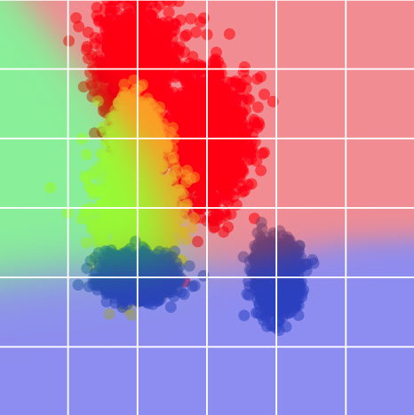
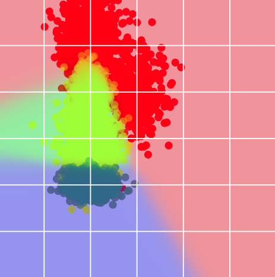
The decision boundaries of the locally trained models are largely similar but differ in important ways. If the two models are averaged via FedAvg (see figure below), the result is a blurred decision boundary which has diverged from the sharp boundary one would expect to compute were the data agglomerated and a central model trained. Alternatively, using an approach that is more robust to data heterogeneity, FedDF,2 the resulting model exhibits the kinds of classification boundaries one would expect when considering the data distributions from a global perspective.
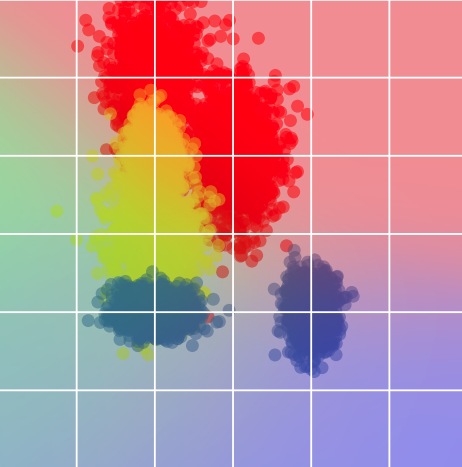
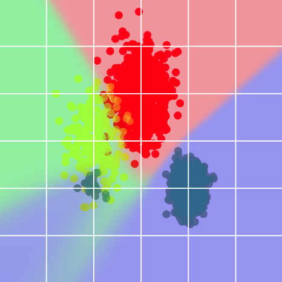
There are two common routes, among many other routes, for addressing heterogeneity in FL. The first is to maintain a sense of a single global model to be trained by all participants. Modifications to items like the aggregation strategy, local learning objectives, or corrections to model updates are applied to better align FL training with the dynamics of centralized training without sacrificing most of the benefits associated with the original FedAvg algorithm. The second route is to abandon, to one degree or another, the idea of a global model that performs well across all clients and instead allow each client to train a unique model. This is known as Personal or Personalized FL (pFL). Such models still benefit from global information through aspects of FL, but more strongly emphasize local distributions.
In the subsequent sections of this chapter, we'll cover a few of the many FL methods aimed at robust global model optimization in FL. Such models are often more generalizable and are more easily distributed to new domains than their pFL equivalents. Alternatively, model performance on each client may not be as high as those produced by pFL approaches.
References & Useful Links
J. Quinonero-Candela, M. Sugiyama, A. Schwaighofer, and N. D. Lawrence. Dataset shift in machine learning. Mit Press, 2008
The FedOpt Family of Aggregation Strategies
Reading time: 4 min
Recall that modern deep learning optimizers like AdamW1 or AdaGrad2 use first- and second-order moment estimates of the stochastic gradients computed during iterative optimization to adaptively modify the model updates. At a high level, each algorithm aims to reinforce common update directions (i.e. those with momentum) and damp update elements corresponding to noisy directions (i.e. those with high batch-to-batch variance). The FedOpt family3 of algorithms, considers modifying the traditional FedAvg aggregation algorithm to incorporate similar adaptations into server-side model updates in FL.
Mathematical motivation
In FedAvg, recall that, after a round of local training on each client, client model weights are combined into a single model representation via
$$ \begin{align*} \mathbf{w}_{t+1} = \sum_{k \in C_t} \frac{n_k}{n_s} \mathbf{w}^k_{t+1}, \end{align*} $$
where \(\mathbf{w}^k_{t+1}\) is simply the model weights after local training on client \(k\). For round \(t\), each client starts local training from the same set of weights, \(\mathbf{w_t}\). Assume that each client has the same number of data points such that \(n_k = m\). With a bit of algebra, the update is rewritten
$$ \begin{align} \mathbf{w}_{t+1} = \sum_{k \in C_t} \frac{n_k}{n_s} \mathbf{w}^k_{t+1} &= \mathbf{w}_t - \frac{1}{C_t} \sum_{k \in C_t} \left( \mathbf{w}_t - \mathbf{w}^k_{t+1} \right), \\ &= \mathbf{w}_t + \frac{1}{C_t} \sum_{k \in C_t} \Delta^k_{t+1}, \\ &= \mathbf{w}_t + \Delta_{t+1}. \tag{1} \end{align} $$
Here, \(\Delta^k_{t+1} = \mathbf{w}^k_{t+1} - \mathbf{w}_t\) is just the vector pointing from the initial models weights to those after local training and \(\Delta_{t+1}\) is simply the uniform average of these update vectors.
Recall that, if each client uses a fixed learning rate, \(\eta\), and performs a single, full gradient update, FedAvg is equivalent to centralized large-batch SGD. Similarly, in this case, if each client performs one step of batch SGD with a learning rate of 1.0, then the update in Equation (1) is equivalent to a batch-SGD update with a learning rate of 1.0 for the server. The "server-side" batch is the union of the batches used on each client.
The observation that \(-\Delta_{t+1}\) is simply a stochastic gradient motivates treating these update directions like the stochastic gradients in standard adaptive optimizers. It's important to note that if the clients, for instance, apply multiple steps of local SGD or use different learning rates, the exact equivalence of \(-\Delta_{t+1}\) to a stochastic gradient is broken. However, it shares similarities to such a gradient and is, therefore, called a "pseudo-gradient."3
The algorithms: FedAdagrad, FedAdam, FedYogi
Drawing inspiration from three successful, traditional adaptive optimizers, the adaptive server-side aggregation strategies of FedAdaGrad, FedAdam, and FedYogi have been proposed. See the algorithm below for details.
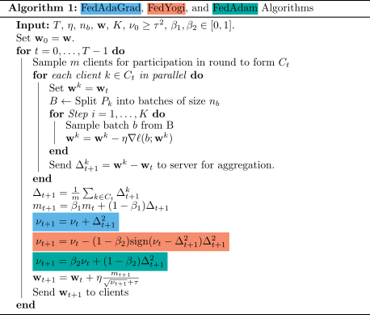
Those familiar with the mathematical formulations of Adagrad, Adam,4 and Yogi5 will recognize the general structure of these equations. Computation of \(m_t\), based on the average of the update directions suggested by each client through local training (\(\Delta_{t+1}\)) serves to accumulate momentum associated with directions that are consistently and frequently part of these updates. On the other hand, \(\nu_t\) estimates the variance associated with update directions throughout the server rounds. Directions with higher variance values are damped in favor of those with more consistency round over round.
As with the usual forms of these algorithms, there are a number of hyper-parameters that can be tuned, including \(\tau, \beta_1,\) and \(\beta_2\). However, sensible defaults are suggested in the paper such that \(\beta_1=0.9\) and \(\beta_2=0.99\). The authors also show that performance is generally robust to \(\tau\).
A number of experiments show that the proposed FedOpt family of algorithms can outperform FedAvg, especially in heterogeneous settings. Moreover, these algorithms, in the experiments of the paper, outperform SCAFFOLD,6 a variance reduction method aimed at improving convergence in the presence of heterogeneity. A final advantage of the FedOpt family of algorithms is that they are accompanied by several convergence results showing that, as long as the variance of the local gradients is not too large, the algorithms converge properly.
References & Useful Links
FedProx
Reading time: 5 min
The FedProx algorithm1 is one of the earliest approaches specifically aimed at addressing the optimization challenges associated with data heterogeneity in FL. At its core, the FedProx algorithm is quite straightforward. However, prior to diving into the modifications proposed in the FedProx approach, we'll first consider the kind of phenomenon that FedProx, along with other methods, attempts to counteract.
To help illustrate the issue, we'll use some helpful visualizations from researchers who proposed the SCAFFOLD method.2,3 Consider a two-client FL setting. Each client has their own loss landscape based on their privately held data, denoted \(f_1\) and \(f_2\). If each client has an equal amount of data, the global loss surface, which is the loss function when constructed from all data available on both clients is equivalent to \((f_1 + f_2)/2\). When performing standard federated training, the objective is to find model weights corresponding to the minimum of this global loss function. See the figure below. Note that the minima associated with the client loss functions are distinct from the global minimum.
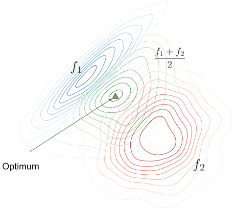
Recall that optimization with FedSGD is equivalent to centralized large-batch SGD. That is, rounds of FedSGD are equivalent to optimizing the global loss function, expressed here as \((f_1 + f_2)/2\). As such, with a properly tuned learning rate, FedSGD will converge to the global optimum, as illustrated in the figure below. Each averaged gradient step makes steady progress towards the global minimum.
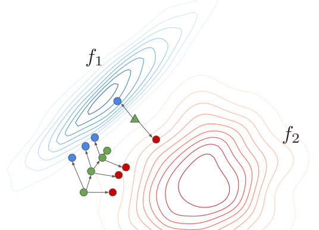
As detailed in the chapter on FedAvg,4 there is a substantial reduction in communication overhead if each client applies multiple steps of batch SGD, optimizing the local model based on the local loss. It was noted therein, however, that this breaks the equivalence enjoyed, for example, by FedSGD with centralized large-batch SGD. In settings, such as the one illustrated in the figures thus far, with data heterogeneity and markedly different loss landscapes this can engender various issues. One such issue is often referred to as "client drift" and is illustrated in the figure below.
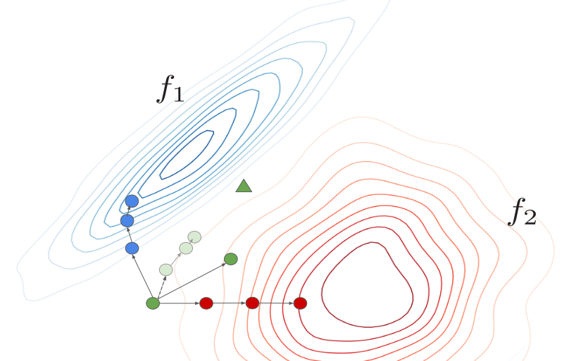
In the figure, each client is applying three local steps of batch SGD before sending the resulting weights to server for aggregation. The grey dots represent the updates using FedSGD for three rounds from the previous figure. The update using FedAvg deviates quite a bit from this path with a distinct drift towards the minima of Client 2. Drifts of this kind can be induced by the shape of the local loss surface and cause issues with FedAvg, such as slowed convergence.
The Math
The general idea for FedProx is to limit models from drifting too far during local training. For a server round \(t\), consider the aggregated weights \(\mathbf{w}_t\). For a given client \(k\), let \(\ell_k(b; \mathbf{w})\) denote the local loss function for a batch, \(b\), of data, parameterized by model weights \(\mathbf{w}\). The primary modification of FedAvg in the FedProx algorithm is to augment \(\ell_k(b; \mathbf{w})\) with a penalty term such that, for \(\mu > 0\), the local loss becomes
$$ \begin{align*} \ell_k(b; \mathbf{w}) + \mu \Vert \mathbf{w} - \mathbf{w_t} \Vert^2. \end{align*} $$
The penalty term is referred to as the proximal loss. It penalizes significant deviation from the global model during local training such that loss optimization must trade off improvements in the standard loss with potential divergence from the original model weights. Revisiting the loss surfaces above, the FedProx penalty term alters the loss surface to make client drift less attractive, unless it leads to significant performance gains.
The Algorithm
The FedProx algorithm is very similar to that of FedAvg, with the only modification coming in the local update calculations.
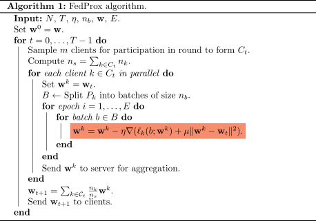
Adapting \(\mu\)
For a well-tuned \(\mu\), FedProx has been shown to outperform FedAvg under heterogeneous data conditions. It is widely applied, both because it is a simple modification to the FedAvg framework and because it works fairly well across a number of tasks. However, in settings where the data is homogeneous, FedProx has been shown to under-perform compared to FedAvg when \(\mu>0\). See the top left of the figure below.
Because of this, the authors of FedProx offer an alternative to extensive hyper-parameter tuning. Heuristically, the proximal weight may be adapted across server rounds. If the aggregated server-side training loss (average final loss on each client) fails to decrease for a round, \(\mu\) is increased. If the loss improves for some number of rounds, \(\mu\) is decreased. In the figure below, this procedure results in the fuchsia colored line in the Figures below.
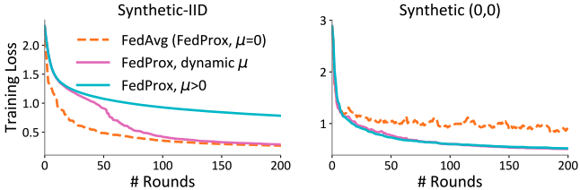
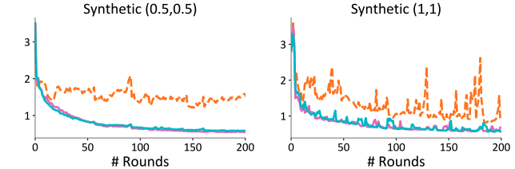
References & Useful Links
MOON: Model-Contrastive Federated Learning
Reading time: 5 min
The MOON algorithm1 is built on the same principles as the FedProx2 approach. That is, it targets limiting client-specific drift during local training by constraining how heavily local model updates stray from global models. The fundamental difference is the way that drift is measured to construct the penalty function.
Contrastive Loss: A Brief Interlude
Before defining the MOON penalty, we need to review contrastive loss and what it aims to do in general. Say we have three vectors, \(\mathbf{z}\), \(\mathbf{z}_s\), \(\mathbf{z}_d \in \mathbb{R}^n\) and we want to optimize a model, parameterized by \(\mathbf{w}\), to map from an input, \(\mathbf{x}\), to a representation, \(\mathbf{z}\), which is closer to \(\mathbf{z}_s\) and further from \(\mathbf{z}_d\). We define
$$ \begin{align*} \ell_{\text{con}}(\mathbf{x};\mathbf{w}) = - \log \frac{\exp \left(\text{sim}(\mathbf{z}, \mathbf{z}_s) \tau^{-1} \right)}{\exp \left(\text{sim}(\mathbf{z}, \mathbf{z}_s) \tau^{-1} \right) + \exp \left(\text{sim}(\mathbf{z}, \mathbf{z}_d) \tau^{-1} \right)}, \end{align*} $$
where \(\text{sim}(\cdot, \cdot)\) is cosine-similarity and \(\tau > 0\) is a temperature. Increasing the similarity of \(\mathbf{z}\) to \(\mathbf{z}_s\) increases the numerator. Pushing \(\mathbf{z}\) away from \(\mathbf{z}_d\) decreases the denominator. Each of which makes \(\ell_{\text{con}}(\mathbf{x};\mathbf{w})\) smaller.
Contrastive loss objectives have been widely used to bring latent representations of similar inputs closer together and push dissimilar inputs further apart. For example, contrastive learning is used extensively in CLIP3 as a means of pushing image-caption text pairs closer together, while pushing unrelated image-text pairs further apart in the CLIP model's representation space.
MOON models and an alternative to weight-drift penalties
As in FedProx, the major contribution of the MOON algorithm is to modify the local learning objective for each client. As foreshadowed in the previous section, the modification involves a contrastive loss function. To define this loss function, MOON first considers splitting the model to be federally trained into two stages: a feature map followed by a classification module. Furthermore, at each server round, \(t\), it distinguishes between three models. These models are illustrated in the figure below.
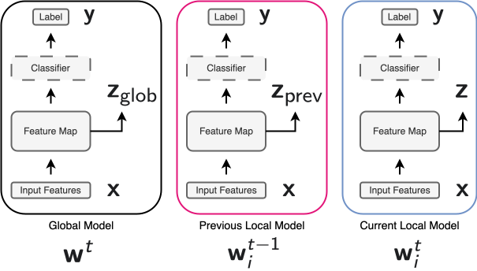
For server round \(t\), the model on the left represents the model after weight aggregation by the server. In the middle is the final model after local training on Client \(i\). The weights, \(\mathbf{w}^{t-1}_i\), have been aggregated across participating clients to form \(\mathbf{w}^t\). Finally, the model on the right is the one being locally trained on Client \(i\). The output of the feature maps in these models will be used to form the local contrastive loss for Client \(i\).
Let \(\ell_i((\mathbf{x}, y); \mathbf{w})\) denote the local loss function of Client \(i\) for an input, \(\mathbf{x}\), and label, \(y\), parameterized by model weights \(\mathbf{w}\). MOON augments this local loss with the contrastive loss function
$$ \begin{align*} \ell_{i, \text{con}}((\mathbf{x}, y);\mathbf{w}^t_i) = - \log \frac{\exp \left(\text{sim}(\mathbf{z}, \mathbf{z}_{\text{glob}}) \tau^{-1} \right)}{\exp \left(\text{sim}(\mathbf{z}, \mathbf{z}_{\text{glob}}) \tau^{-1} \right) + \exp \left(\text{sim}(\mathbf{z}, \mathbf{z}_{\text{prev}}) \tau^{-1} \right)}. \end{align*} $$
That is, the local objective for Client \(i\) is written
$$ \begin{align*} \ell_i((\mathbf{x}, y); \mathbf{w}^t_i) + \mu \ell_{i, \text{con}}((\mathbf{x}, y);\mathbf{w}^t_i), \end{align*} $$
for \(\mu > 0\). Note that, when computed over a batch of data, the average loss over all data points in the batch is computed.
The idea here is similar to FedProx. In some sense, we still want to make sure that, during training, the model does not drift too far from the global model, as was the case in FedProx. The difference, here, is that we're applying that constraint in the feature representation space, rather than directly in the model weights themselves. In the original work, MOON showed notable improvements over methods like FedProx in heterogeneous settings. However, it does not always outperform FedProx or even FedAvg.4 As such, there are likely scenarios where MOON is the right approach for FL in heterogeneous settings, while others might benefit from an alternative technique.
The Algorithm
The MOON algorithm is fairly similar to that of FedProx. Most server-side aggregation strategies may be applied in combination with MOON. However, the algorithm has some additional compute and memory overhead, as forward passes of three separate models must be run in order to extract the latent representations of the data points in each training batch. In the algorithm below, FedAvg is used as the server-side strategy.
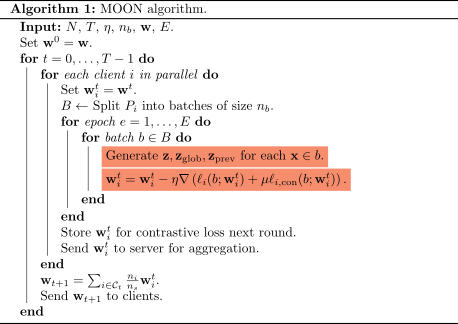
References & Useful Links